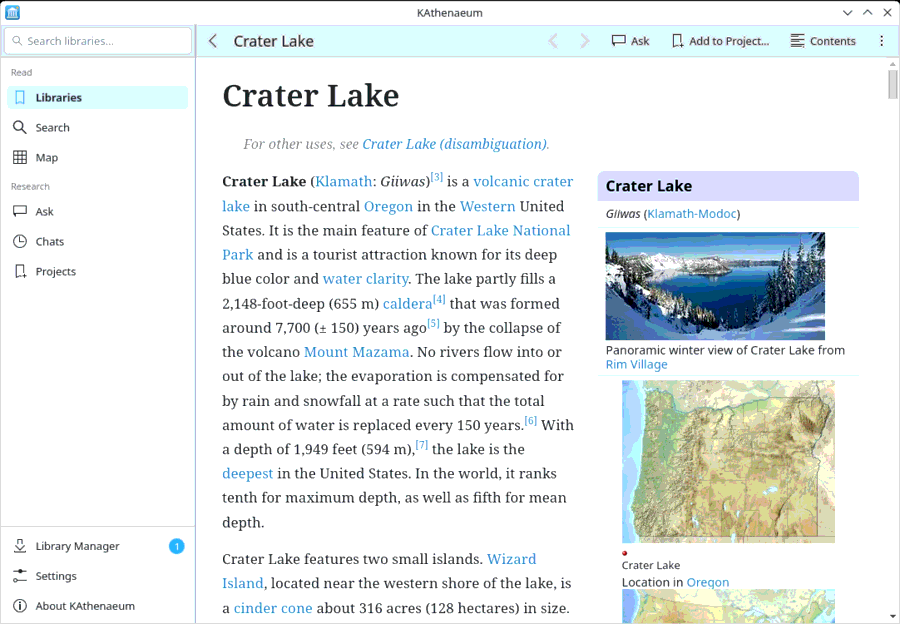

Articles are shown cleanly, with their pictures and infoboxes, in your desktop's colours (light or dark). Links to other articles open in the same page; the arrows in the header go back and forward. jumps to a section. A link to a web site opens in your web browser, never inside KAthenaeum.
Articles use the whole width of the window. If you prefer a narrower column, which is easier to read on a wide screen, turn off Use the Whole Window in the article's menu (), or Use the whole window for articles in → .
Select text and right-click it for , (keep the passage in a research project) and (ask the assistant what the article means by it). opens a chat about the article beside it; adds it to a research project. Passages you have saved are highlighted in the article, with your note when you point at them.
